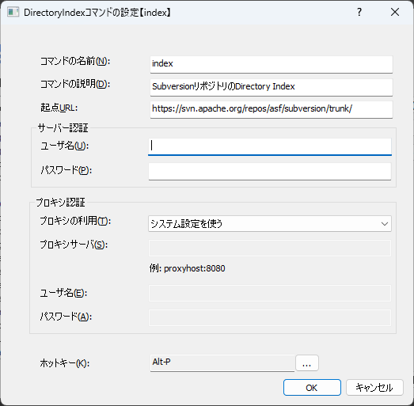

DirectoryIndexコマンド
Directory Index(Webサーバーのインデックスページ)上のディレクトリやファイルを表示するコマンド。
ディレクトリやファイルをアプリのUI上からインクリメンタルに絞り込んで、階層をたどることができる。
操作に慣れると、ブラウザで階層をたどるよりも所望のコンテンツのパスに早く到達できる。
例:
ブラウザで表示したときに下記のように表示される階層に対して・・
{kind=link}
DirectoryIndexコマンドを使うと下記のような表示をすることができる
{kind=link}
ディレクトリを選択すると、そのディレクトリ階層に移動した状態で再度一覧を表示する
設定画面

コマンドの名前
入力画面からコマンドを実行するためのキーワードコマンドの説明
コメント表示欄に記載される文字列。起点URL
コマンドを実行したときに起点となるURLを指定する
ここで指定したURLから得られたハイパーリンクの一覧を候補として表示するサーバー認証
起点URLでアクセスするページが認証を必要とする場合の認証情報を指定するユーザー名
認証情報(ユーザー名)を指定するパスワード
認証情報(パスワード)を指定する
プロキシ
起点URLでアクセスするためにプロキシを経由する必要がある場合にプロキシの設定を行う -プロキシの利用方法
以下の3つを選択できるシステム設定を使う
インターネットオプションで設定したプロキシ設定を用いるプロキシを指定する
プロキシサーバを明示的に指定する。プロキシを使わない
プロキシを経由せず、起点URLに直接をアクセスするプロキシサーバ
プロキシを指定するを選択した場合の、プロキシサーバのホスト名とポート番号を指定する
ホスト名とポート番号をコロン(:)で区切って指定するユーザ名
指定したプロキシサーバが認証を必要とする場合のユーザー名を指定するパスワード
指定したプロキシサーバが認証を必要とする場合のパスワードを指定する
ホットキー
コマンドを呼び出すキーを設定できる。設定したキーを押下するとコマンドを実行できるようになる。
コマンドの動作
このコマンドではURLから得られたHTMLコンテンツを解析して、以下の方法で候補を抽出する。
コンテンツの
<a>要素に含まれるhref属性(リンク先)の値を候補として列挙するリンク先は相対パスである必要がある。絶対URLを除外する。
同じページの階層を辿ることを目的としたコマンドであるため、別ドメインへの遷移を許可しない
候補が選択されたら、その候補が示すURLに起動して再度HTMLを取得/解析する
このコマンドは「現在位置」という状態を持つ
入力欄がクローズされたとき、状態はリセットされる
制限事項
起点URLとしてDirectory Indexではなく通常のコンテンツを返すURLを指定することもできるが、その際の結果がどうなるかは無保証
実行時の動作
押下キー |
動作 |
|---|---|
|
選択した候補のリンク先へ遷移する |
|
選択した候補のリンク先をブラウザで開く |
|
選択した候補のリンク先URLをクリップボードにコピーする |
|
現在の階層をブラウザで開く |